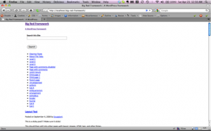

The Big Red Framework is intended for web developers creating bespoke themes for their clients. It contains a ton of options for the developer to configure, without a messy options screen cluttering up the WordPress admin.
The framework includes:
- Micro-formats
- ARIA roles
- html5 form inputs
- html5 inline tags
Credits
We’ve developed this framework to make our lives easier. It includes some other projects that also make our lives easier, in alphabetical order they are:
- DD_belatedPNG by Drew Diller
- HTML5 enabling script by Remy Sharp
- jQuery hashchange plugin by “Cowboy” Ben Alman
- Modernizr by Faruk Ates & Paul Irish
- Fancybox, a lightbox clone.
- Selectivizr by Keith Clark
- …and various odds & ends we’ve picked up from the interwebs
Using the framework
Never create your client’s site in the big-red-framework theme folder. Instead you should create a child theme and use that to house the CSS, custom JavaScript, images and the site’s settings.
The WordPress Codex has a page on using child themes.
Creating a child theme
- Copy the files from the starter directory into the base folder of your child theme
- Create the sub-directory assets in your child theme
- Copy the framework’s assets/child/ directory into the assets directory of your child theme
More documentation to come. Really, most of it’s already written!